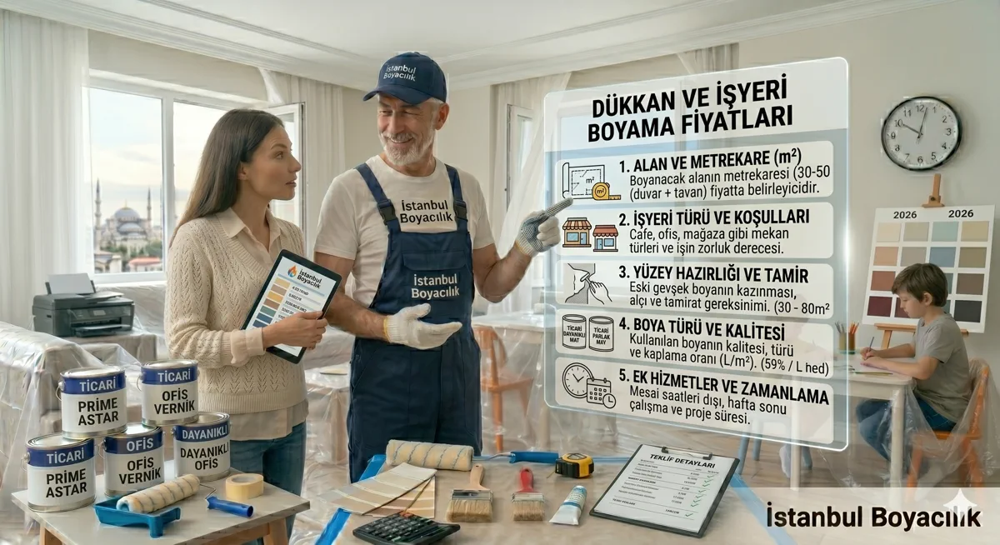

İşyerinizi boyatmayı düşünüyorsunuz ama ne kadara mal olacağını bilmiyorsunuz. Dükkan, ofis, restoran veya mağaza boyama fiyatları ev boyamadan farklı dinamiklere sahiptir. İş saatleri dışında çalışma zorunluluğu, özel yüzey hazırlıkları ve ticari boya gereksinimleri fiyatı doğrudan etkiler.
İstanbul Boyacılık olarak yıllardır Kadıköy'den Beşiktaş'a, Şişli'den Ataşehir'e kadar İstanbul'un dört bir yanında ticari mekan boyama hizmeti veriyoruz. İşte 2026 yılı güncel dükkan ve işyeri boyama fiyatları:
İşyeri Boyama Neden Ev Boyamadan Farklıdır?
Ticari mekanların boyama gereksinimleri konut boyamasından önemli ölçüde farklıdır. Yüksek trafik nedeniyle daha dayanıklı ve silinebilir boyalar kullanılması gerekir. Hijyen standartları özellikle restoran ve kliniklerde belirleyici rol oynar. Ayrıca çoğu işyeri boyama işi mesai saatleri dışında veya hafta sonları yapılmak zorundadır, bu da işçilik maliyetini %15-25 artırabilir.
1 İşyeri Türüne Göre Boyama Fiyatları
İşyeri boyama fiyatları, mekanın türüne, büyüklüğüne ve kullanılacak boya kalitesine göre değişkenlik gösterir. Aşağıdaki tablo 2026 yılı İstanbul ortalama fiyatlarını yansıtmaktadır:
| İşyeri Türü | m² Fiyat (İşçilik) | m² Fiyat (Malzeme Dahil) |
|---|---|---|
| Ofis / Büro | 150 – 250 ₺ | 280 – 450 ₺ |
| Mağaza / Dükkan | 160 – 280 ₺ | 300 – 500 ₺ |
| Restoran / Kafe | 180 – 320 ₺ | 350 – 550 ₺ |
| Depo / Atölye | 100 – 180 ₺ | 200 – 350 ₺ |
| Showroom | 200 – 350 ₺ | 400 – 650 ₺ |
| Kuaför / Güzellik Salonu | 170 – 300 ₺ | 320 – 520 ₺ |
* Fiyatlar 2026 Mart ayı İstanbul ortalamasıdır. Bölgeye, mekanın durumuna ve boya tercihine göre değişiklik gösterebilir.
Metrekare fiyatları yaklaşık ön değerlendirme aralığıdır. Uygulanacak ölçüm yöntemi, boyanacak alanın kapsamı, yüzey durumu, tamirat ihtiyacı, kat sayısı ve malzeme seçimi keşif sırasında netleştirilir.
2 Metrekareye Göre Toplam Maliyet Örnekleri
Somut bir fikir edinmeniz için farklı büyüklükteki işyerleri için örnek maliyet hesaplamaları hazırladık:
Küçük Dükkan (30–50 m²)
Bakkaldan eczaneye, küçük bir butikten berber dükkanına kadar bu kategoriye girer. Genellikle 1-2 günde tamamlanır.
- Sadece iç cephe: 8.000 – 18.000 ₺
- İç cephe + tavan: 10.000 – 22.000 ₺
- Komple (iç + dış cephe): 18.000 – 35.000 ₺
Orta Ölçekli Ofis (80–150 m²)
Levent, Nişantaşı ve Etiler gibi iş merkezlerindeki ofisler bu kategoridedir. Genellikle 3-5 gün sürer.
- Standart boya: 22.000 – 45.000 ₺
- Premium boya (silinebilir): 35.000 – 65.000 ₺
- Dekoratif uygulama dahil: 45.000 – 85.000 ₺
Restoran / Kafe (100–200 m²)
Restoran ve kafelerde hijyenik, kokusuz ve gıdaya uygun boyalar kullanılması zorunludur. Beyoğlu, Kadıköy ve Bakırköy gibi bölgelerde restoran boyama sıklıkla talep edilir.
- Standart uygulama: 35.000 – 70.000 ₺
- Anti-bakteriyel boya ile: 50.000 – 95.000 ₺
- Dekoratif + tavan dahil: 65.000 – 120.000 ₺
Büyük İşyeri / Mağaza (200–500 m²)
Esenyurt, Başakşehir ve Beylikdüzü gibi yeni gelişen bölgelerde büyük mağaza ve showroom boyama talebi artmaktadır.
- Standart uygulama: 60.000 – 150.000 ₺
- Premium + epoksi zemin: 100.000 – 250.000 ₺
- Komple renovasyon boyama: 150.000 – 350.000 ₺
3 Fiyatı Etkileyen 6 Temel Faktör
Çalışma Saatleri
Gece veya hafta sonu çalışma %15-25 ek maliyet getirir
Yüzey Durumu
Eski boya sökümü, çatlak tamiri ve astar ek maliyet oluşturur
Boya Kalitesi
Ekonomik ile premium boya arasında 2-3 kat fiyat farkı olabilir
Tavan Yüksekliği
3 metrenin üzerindeki tavanlar iskele gerektirir ve maliyeti artırır
Konum
Merkezi semtlerde ulaşım ve park sorunu maliyeti etkileyebilir
Özel Gereksinimler
Anti-bakteriyel, yangına dayanıklı veya epoksi boyalar daha pahalıdır
4 İşyeri Türüne Göre Boya Seçimi
Her işyeri türü için farklı boya özellikleri gereklidir. Yanlış boya seçimi hem estetik hem de dayanıklılık açısından sorun yaratır. Özellikle VOC içeriği düşük boyalar tercih etmek, çalışanlarınızın sağlığı için kritik önem taşır.
| İşyeri Türü | Önerilen Boya | Özellik |
|---|---|---|
| Ofis | Saten / Yarı mat | Göz yormayan, silinebilir |
| Restoran / Kafe | Anti-bakteriyel, silinebilir | Hijyenik, leke tutmaz |
| Mağaza | Parlak / Saten | Renk canlılığı, dayanıklı |
| Depo / Atölye | Epoksi / Endüstriyel | Aşınmaya dayanıklı |
| Kuaför / Salon | Neme dayanıklı, mat | Buhar ve kimyasala dayanıklı |
| Showroom | Premium dekoratif | Estetik, prestijli görünüm |
5 İşyeri Boyama Süreci Nasıl İşler?
Adım Adım İşyeri Boyama Süreci
- Keşif ve Fiyat Teklifi: Ekibimiz işyerinize gelir, ölçü alır ve detaylı fiyat teklifi sunar
- Renk ve Boya Seçimi: İşyeri türüne uygun boya ve renk önerileri yapılır
- Çalışma Planı: İş akışınızı aksatmayacak şekilde gece, hafta sonu veya tatil günleri planlanır
- Mekan Koruma: Mobilya, elektronik cihazlar ve zemin özenle kapatılır
- Yüzey Hazırlığı: Çatlak tamiri, zımpara ve astar uygulaması yapılır
- Boyama: Minimum 2 kat boya uygulanır, gerekirse 3. kat eklenir
- Temizlik ve Teslim: İşyeriniz boyama öncesi düzenine kavuşturulur
Boyama öncesi yapılacak tüm hazırlıkları detaylı öğrenmek için boyama öncesi yapılacaklar listemize göz atabilirsiniz. Ayrıca boyacı ile sözleşme yaparken dikkat etmeniz gerekenler yazımız da işinize yarayacaktır.
6 Bölgeye Göre Fiyat Farkları
İstanbul Bölgesel Fiyat Haritası
- Yüksek Fiyat Bölgeleri: Beşiktaş, Şişli, Bakırköy, Kadıköy, Üsküdar — Merkezi konum ve park zorluğu nedeniyle %10-20 daha yüksek
- Orta Fiyat Bölgeleri: Ataşehir, Ümraniye, Maltepe, Bahçelievler, Kağıthane — Standart fiyatlar geçerli
- Uygun Fiyat Bölgeleri: Esenyurt, Sultanbeyli, Tuzla, Arnavutköy, Silivri — Daha rekabetçi fiyatlar
- Premium Semtler: Bebek, Etiler, Nişantaşı, Levent, Tarabya — Premium boya ve hizmet talebi nedeniyle %20-35 daha yüksek
7 İşyeri Boyama Maliyetini Düşürmenin Yolları
Kaliteden ödün vermeden bütçenizi optimize edebilirsiniz. Boya maliyetini düşürmenin 7 yolu yazımızda detaylı anlatıyoruz, ancak işyerine özel birkaç ipucu:
Tasarruf İpuçları
- Toplu alan avantajı: 200 m²'nin üzerindeki alanlarda m² fiyatı %10-15 düşer
- Mesai saatlerinde boyatın: Gece ve hafta sonu yerine normal çalışma saatlerinde boyatmak maliyeti düşürür
- Mekanı kendiniz hazırlayın: Mobilyaları kendiniz taşıyarak işçilik tasarrufu yapın
- Sezon avantajı: Kış aylarında ticari boyama taleplerinin azaldığı dönemlerde boyatın
- Doğru boya seçimi: Gereksiz premium boya yerine işyeri türüne uygun kaliteyi tercih edin
- Birden fazla teklif alın: En az 3 firmadan detaylı teklif alın ve karşılaştırın
Dikkat Edilmesi Gerekenler
- Ruhsat ve izinler: Özellikle dış cephe boyamada belediye izni gerekebilir
- Sigorta: İşyeri boyama sırasında oluşabilecek hasarlar için boyacının sigortasını kontrol edin
- Garanti: Garantinin kapsamını, süresini ve istisnalarını yazılı teklifte veya sözleşmede net olarak talep edin
- Havalandırma: Boyama sırasında ve sonrasında güçlü dış hava dolaşımı sağlayın; süreyi ürünün teknik talimatlarına, ortam sıcaklığına ve koku durumuna göre belirleyin, solunum hassasiyeti olan çalışan ve müşteriler için daha ihtiyatlı davranın
- Yangın güvenliği: Boya malzemeleri yanıcıdır, yangın söndürücülerin hazır olduğundan emin olun
8 Sık Sorulan Sorular
İşyerimi kaç günde boyatabilirsiniz?
Küçük dükkanlar (30-50 m²) 1-2 günde, orta ölçekli ofisler 3-5 günde, büyük mağazalar ise 1-2 haftada tamamlanır. Gece çalışma imkânı varsa süre kısalır.
İş saatlerimde çalışabilir misiniz?
Evet. İş akışınızı aksatmamak için gece vardiyası, hafta sonu veya resmi tatil günlerinde çalışma imkânımız vardır. Ek mesai ücreti uygulanır.
Hangi boyaları kullanıyorsunuz?
İşyeri türüne göre Marshall, Jotun, Filli Boya ve Dyo markalarının ticari mekan boyalarını kullanıyoruz. Tüm boyalarımız düşük VOC içeriklidir.
Boyama süresince işyerimde kalabilir miyim?
Boyama yapılmayan bölümlerde çalışmaya devam edebilirsiniz. Ancak boya kokusuna hassas çalışanlar ve müşteriler için havalandırma şarttır.
Garanti veriyor musunuz?
Uygulama kapsamına göre işçilik garantisi sağlanır. Garanti kapsamı ve istisnaları teklif veya iş sözleşmesinde belirtilir.
Dükkan, mağaza ve ofisiniz için İstanbul iş yeri boyama hizmeti kapsamında keşif randevusu alabilir, açılış takviminize uygun bir uygulama planı isteyebilirsiniz.
İşyeriniz İçin Ücretsiz Keşif ve Fiyat Teklifi
İstanbul'un her ilçesinde dükkan, ofis ve mağaza boyama hizmeti veriyoruz. Hemen arayın, ücretsiz keşif yapalım!